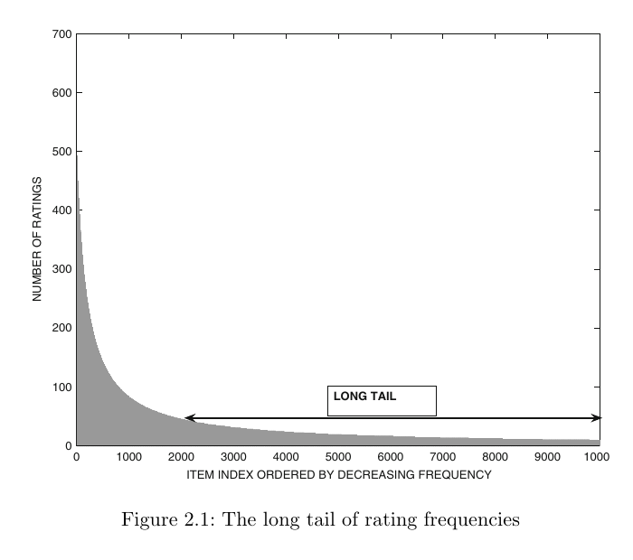

Recommendation Problems and Classical Methods
CP4285 Modern Recommendation Systems — Week 01
soc-n.us/cp4285-t2610-w01
11 Aug 2026
01 Overview
Changelog
- 5 Sep 2026 — Standardised week labels and deadline date-time formatting; resized the dataset-catalogue screenshot to fit the slide.
- 20 Aug 2026 — Standardised slide primitives and timers; clarified worked examples, colour mapping, and notation.
- 10 Aug 2026 — Refined activities, modelling prompts, and the neighbourhood-CF teaching sequence.
🎥 Video: Spotify Recommendations

Recommendations Everywhere
Everyday surfaces
Video, music, shopping, news, jobs, dating, maps, social feeds, and course resources.
Inputs — behaviour, context, item attributes, social signals
Outputs — a shortlist, ranking, or exposure decision
Warning
A recommender does not merely retrieve information. It helps decide what receives attention — and what remains unseen.
CP Pilot Course
CP4285 is a pilot in the CP428x Emerging Topics in Computer Science series.
- We test and improve content, assessment, labs, tutorials, and delivery for future cohorts.
- Students help by self-learning, building labs and tutorials, slide notes for more comprehensive study.
- And documenting processes, gaps, and improvements.
Warning
This means that your class notes will rarely be ready before class. We have to create the materials from scratch.
🎰 Bandit Time: Objectives
Same data, different objective
Two systems use the same user data but optimise different objectives. What should we expect?
Choose an answer; justify it in one sentence.
📶 AI Voice Mode
We are using AI Voice Mode experimentally to investigate the ethics of recommenders: how an interactive system explains trade-offs, frames uncertainty, and responds when we question who receives attention.
It is a conversation partner for inquiry, not an authority or a production recommender. Listen for what it assumes, what it leaves out, and how its wording could shape our judgement.
👥 Find the Recommender
Audit one recommendation
- Name one recommendation you received recently.
- What signals might the system have used?
- What objective might it be optimising?
- Who or what might be left unseen?
Compare with a partner; share one observation.
📶 Ethics Thread
Recommendation systems allocate attention, visibility, and opportunity.
Historical data and engagement objectives can reproduce or amplify bias.
Personalisation raises questions about privacy, transparency, exposure, fairness, and stakeholder impact.
02 Schedule
🛣️ Roadmap: Course Learning Outcomes
By the end of CP4285, you should be able to:
- CLO 1: Compare classical, content-based, collaborative-filtering, and hybrid methods.
- CLO 2: Implement matrix-factorization and neural recommenders.
- CLO 3: Design rigorous offline evaluation using ranking metrics.
- CLO 4: Analyse cold start and propose appropriate remedies.
- CLO 5: Critique systems through fairness, privacy, transparency, and stakeholder impact.
- CLO 6: Explain sequential, graph-based, multi-objective, and LLM-enhanced systems.
- CLO 7: Design and justify an end-to-end recommender pipeline.
- CLO 8: Communicate and defend technical designs and results.
Course Library
Charu C. Aggarwal, Recommender Systems: The Textbook
Focus of the first third of the course.
A course library for going deeper
Weekly Topics
| Week | Date | Topic |
|---|---|---|
| 01 | 11 Aug | Recommendation Problems and Classical Methods |
| 02 | 18 Aug | Latent Factor Models |
| 03 | 25 Aug | Evaluation of Recommendation Systems |
| 04 | 1 Sep | Neural Recommendation Models |
| 05 | 8 Sep | Sequential and Session-Based Recommendation |
| 06 | 15 Sep | Retrieval and Ranking Architectures |
Weekly Topics (cont.)
| Week | Date | Topic |
|---|---|---|
| — | 22 Sep | Recess Week — No Class |
| 07 | 29 Sep | Project Design Critique Workshop |
| 08 | 6 Oct | Learning-to-Rank |
| 09 | 13 Oct | Graph-Based Recommendation |
| 10 | 20 Oct | Multi-Objective Recommendation |
| 11 | 27 Oct | Exploration and Online Learning |
| 12 | 3 Nov | LLMs, Generative Recommendation, Research Frontiers |
| 13 | 10 Nov | Final Project Presentations @ 29th STePS |
Class Meetings
- Time: Every Tue, 10:00–12:00 SGT
- Venue: Seminar Room 12, COM3-01-21
Lectures will be recorded where technology permits — recordings are for revision only, not a substitute for attendance
There are no tutorial sessions for this course — We’ll be building the materials for the next cohort.
03 Assignments & Grading
Grading Overview
| Component | Weight |
|---|---|
| Class Participation | 10% |
| Essays | 20% |
| Group Project | 30% |
| In-Class Quizzes | 10% |
| Final Exam (Mon, 23 Nov 2026 · 13:00–15:00 SGT) | 30% |
Class Participation (10%)
- In-lecture activities
- Pre-lecture activities
- Pre-Flight Survey and Midterm Survey
- Pre-Flight Survey (due Week 02; Mon, 17 Aug 2026 · 23:59 SGT)
- Midterm Survey (due Week 08; Mon, 5 Oct 2026 · 23:59 SGT)
Warning
Missing the Pre-Flight or Midterm Survey will directly reduce your participation grade. Don’t forget to do them!
Essays (20%)
Two individual take-home essays, each worth 10%
- Essay 1: Due Week 03; Mon, 24 Aug 2026 · 23:59 SGT
- Essay 2: Due Week 08; Mon, 5 Oct 2026 · 23:59 SGT
Short written analyses of recommender-system methods, evaluation choices, and social implications (8%). Randomised peer review counts towards the remaining 2%.
AI tools are permitted as a resource — but an AI declaration is mandatory for each submission
Note
Essays assess your own critical thinking. AI may assist but must not substitute your analysis. So do them on your own, and don’t let AI do the hard work of understanding; the process is more important than the outcome.
Project (30%)
- Groups have 2–4 students
- Define a clear problem anchored on a selected recommendation system dataset
Milestones:
- Week 03: Project Mini-team Declaration — Mon, 24 Aug 2026 · 23:59 SGT
- Submit a self-formed team or indicate that you need instructor placement
- Min has the final decision on group formation (may override student-formed groups)
- Week 07: Project Design Critique Workshop
- Week 13: Final Project Presentation at 29th STePS: Wed, 11 Nov
- Teams presenting at 29th STePS do not submit a project report; other teams submit a report instead, due same Wed, 11 Nov 2026 · 23:59 SGT
Recommendation Dataset Catalogue
Click the screenshot to open the live dataset catalogue.
RUCAIBox. (n.d.). RecSysDatasets [GitHub repository]. github.com/RUCAIBox/RecSysDatasets
Quizzes (10%)
- Quizzes are jointly created by peers and instructors
- Peers contribute candidate questions, answers, and plausible distractors from their self-learning
- Min will assign peers randomly to a week and section responsible.
- Min will curate, verify, and finalise questions so that the assessments remains fair, accurate, and aligned with the course learning outcomes
- Combined worth 10% of total marks
- AI tools must not be used during in-class quizzes.
Note
Co-creation makes quizzes part of the pilot course: students help build better learning materials for this cohort and future cohorts.
Authority Chain
Our slides will be the most authoritative source of truth.
While the we will try to get the slides synced with the website or Canvas, use information introduced in lecture as the definitive source.
There will likely be errors in the lecture, so check any doubts or questions with Min.
Unless a slide or Canvas announcement specifies otherwise, assignment deadlines are on Mon, 23:59 SGT.
Note
The slide deck built in Quarto and rendered through reveal.js. The website is also built Hugo and served using Github Pages. This means any student, member of the public, or AI can inspect all details of the course. Use this to your advantage.
☕ Break · the recommendation desk
Mrs. Arabella Murray, librarian, works at her desk while five girls read at a nearby table.
Digital Public Library of America. (n.d.). Photograph of a librarian at the Dunbar Branch Library, Athens, Georgia, 1944–1948 [Photograph]. Source
04 Recommendation Problems and Decision Goals
- User–item matrices, feedback, and missingness
- Prediction, top-k ranking, and useful lists
- Signals and classical recommendation strategies
- Cold start and heavy-head/long-tail exposure
- Treatment lenses and safeguards
The User–Item Matrix
| \(R\) | \(i_1\) | \(i_2\) | \(i_3\) | \(i_4\) | \(i_5\) |
|---|---|---|---|---|---|
| \(u_1\) | 5 | ? | 2 | 4 | ? |
| \(u_2\) | ? | 4 | ? | 1 | 3 |
| \(u_3\) | ? | ? | ? | ? | ? |
| \(u_4\) | 3 | ? | 4 | ? | 2 |
| \(u_5\) | ? | 2 | ? | 5 | ? |
| \(u_6\) | 5 | 4 | 5 | 2 | 4 |
| \(u_7\) | 5 | 1 | 5 | 1 | 5 |
| \(u_8\) | ? | ? | 4 | ? | ? |
\[R \in \mathbb{R}^{|U|\times|I|}\]
- \(u \in U\): user; \(i \in I\): item
- \(r_{ui}\): observed feedback
- \(\Omega\): observed \((u,i)\) pairs
Warning
A ? is usually unobserved, not a negative rating.
To think about
What user types might be represented in the matrix?
What other forms can “ratings” take?
From a Score to a Useful List
Prediction
Estimate a value such as \(\widehat{r}_{ui}\) for one user–item pair.
Question: “Will this user rate this film highly?”
Top-k ranking
Order candidate items and present a short list.
Question: “Which five films should appear first, now?”
Accurate scores do not automatically make a useful list.
To think about
Does top-k apply to users as well as items?
Signals and Usefulness
ratings · clicks · saves · purchases
metadata · text · images
time · device · place
friends · availability · constraints
Note
The right evaluation follows the intended usefulness — not just the available data.
A useful recommendation can be …
- relevant to the task
- novel or serendipitous
- diverse across the list
- well covered across a catalogue
- explainable and constraint-respecting
ratings · clicks · saves · purchases
metadata · text · images
time · device · place
friends · availability · constraints
What else could a recommender capture?
- Name three additional signals.
- Place each in a box at left — or argue for a new box.
- For one signal, name a benefit and a privacy, fairness, or manipulation risk.
Pairs: prepare one signal to report.
📶 to critique ethical standpoint.
In pairs, complete the four orange cells. Be ready to justify one answer from the evidence each method uses.
| Approach | Main evidence | Useful when | Early limitation |
|---|---|---|---|
| Popularity | aggregate interactions | ________ | reinforces the head |
| Content-based | item attributes + one user | features are meaningful | ________ |
| Collaborative filtering | patterns across users | ________ | sparse or cold data |
| Knowledge-based | requirements and constraints | history is weak | ________ |
Four Classical Starting Points
| Approach | Main evidence | Useful when | Early limitation |
|---|---|---|---|
| Popularity | aggregate interactions | little personal data | reinforces the head |
| Content-based | item attributes + one user | features are meaningful | narrow, familiar lists |
| Collaborative filtering | patterns across users | history is available | sparse or cold data |
| Knowledge-based | requirements and constraints | history is weak | needs elicitation |
When the Matrix Has No Answer
❄️ Cold start
- New user: no observed preferences
- New item: no interaction evidence
- New system: few observations overall
A response is a design choice
- ask for requirements or examples
- use item metadata
- use a transparent popularity fallback
- reserve exposure for new or long-tail items
🎰 Bandit Time: What should this system optimise?
A campus library has sparse borrowing history and a student asks for “a short, accessible book on climate migration.”
“What types of users are there?”
🃏 Key Users to Consider
We’ll use card suits as User Archetypes (treatment lenses) to reason about the outcomes. These are not demographic labels or permanent personalities. They are situational lenses for asking what a recommender should protect or provide.
| User Archetype | Ask the system to consider |
|---|---|
| ♣ Clubs — adversarial / shill | manipulation, coordinated abuse, robustness |
| ♥ Hearts — social | social evidence, influence, conformity risk |
| ♦ Diamonds — novelty seeker | freshness, diversity, serendipity, new-item exposure |
| ♠ Spades — loyalist / metadata-driven | stable attributes, filters, consistency, explanation |
🃏 Four Different Safeguards
♣ Clubs
Can coordinated ratings force a target item into the list?
♥ Hearts
Does a social cue inform the user without creating unwanted exposure or conformity?
♦ Diamonds
Does the list include genuinely new, long-tail, or emerging options?
♠ Spades
Can the user keep an important attribute fixed and understand why an item appears?
“Good recommendation” changes when the risk, task, and user situation change.
Return to the recommendation you audited in Section 01.
- Name the likely signal and objective.
- Is it predicting a response or ranking a shortlist?
- Choose one user archetype to critique: a requirement, diversity/coverage target, explanation, or abuse check.
Pairs: write a four-line audit.
📶 critique one omitted stakeholder or assumption; challenge its answer.
05 Neighborhood-Based Collaborative Filtering (CF)
- Rating types, sparse matrices, and long-tail evidence
- User–user and item–item neighbourhoods
- Similarity measures: Pearson, raw cosine, adjusted cosine, and confidence
- Worked examples: from shared evidence to a similarity score
- From a chosen neighbourhood to a prediction
Rating Types
- Continuous ratings
- Forced-choice ratings
- Ordinal ratings
- Binary ratings
- Unary ratings
- Explicit ratings
- Implicit ratings
Note
Missing-value imputation: do not treat an unobserved explicit rating as a default score; pre-substitution can introduce bias.
To think about
How do missing values impact training and testing in recommendation systems?
The Long Tail
- A small heavy head receives most ratings.
- The long tail holds many items with little evidence.
- Thin overlap makes neighbourhood similarity uncertain.
- Head-only ranking can reinforce what is already visible.
The tail is under-observed, not empty.

Source: Aggarwal (2016), p. 33.
From a Sparse Matrix to a Neighborhood
| User | i1 | i2 | i3 | i4 | i5 |
|---|---|---|---|---|---|
| u1 (u) | 5 | ? | 2 | 4 | ? |
| u6 (v) | 5 | 4 | 5 | 2 | 4 |
Mutual evidence
\[ I_u \cap I_v = \{i_1,i_3,i_4\} \]
User-based CF
Find users who rate overlapping items similarly.
Item-based CF
Transpose the question: find items that receive similar patterns of ratings.
Standard notation
- \(I_u\): items observed for user \(u\)
- \(U_i\): users who observed item \(i\)
- \(I_u \cap I_v\): shared evidence for a user pair
- \(P_u(j)\): the neighbours of \(u\) who rated target item \(j\)
Similarity is not a fact
It is an estimate from a partial overlap. With sparse data, two users may have no common ratings at all.
Similarity I: Pearson Correlation
\[ \operatorname{Pearson}(u,v)= \frac{\sum_{\color{orange}{k\in I_u\cap I_v}}\!\bigl(\color{teal}{r_{uk}-\mu_u}\bigr)\bigl(\color{teal}{r_{vk}-\mu_v}\bigr)} {\color{navy}{\sqrt{\sum_{\color{orange}{k\in I_u\cap I_v}}\!\bigl(r_{uk}-\mu_u\bigr)^2}\;\sqrt{\sum_{\color{orange}{k\in I_u\cap I_v}}\!\bigl(r_{vk}-\mu_v\bigr)^2}}} \]
Overlap: only mutually rated items contribute.
Centred Rating: rating minus that user’s mean, so generous and harsh raters are put on a comparable baseline.
Normalisation: turns aligned variation into a bounded correlation-like score.
Use it when
Rating-scale differences matter.
Watch for
Very small overlap can create an unstable correlation.
Worked Example I: Pearson Correlation
User–user example: \(u_1\) and \(u_6\)
Excerpt from the user–item matrix \(R\)
| User | i1 | i2 | i3 | i4 | i5 |
|---|---|---|---|---|---|
| u1 | 5 | ? | 2 | 4 | ? |
| u6 | 5 | 4 | 5 | 2 | 4 |
Step 1 — begin with the same overlap
\[I_{\color{teal}{u_1}}\cap I_{\color{orange}{u_6}}=\{i_1,i_3,i_4\}\]
Step 2 — subtract each user’s own mean
\[\mu_{\color{teal}{1}}=\color{teal}{\frac{11}{3}},\quad \mu_{\color{orange}{6}}=\color{orange}{4}\] \[\mathbf s_{\color{teal}{1}}=\color{teal}{\left(\frac{4}{3},-\frac{5}{3},\frac{1}{3}\right)},\quad \mathbf s_{\color{orange}{6}}=\color{orange}{(1,1,-2)}\]
Step 3 — correlate the centred vectors
\[\operatorname{Pearson}(\color{teal}{u_1},\color{orange}{u_6})=\frac{-1}{\color{teal}{\sqrt{14/3}}\color{orange}{\sqrt{6}}}=-0.189\]
Similarity II: Raw Cosine
\[ \operatorname{raw\text{-}cosine}(u,v)= \frac{\sum_{\color{orange}{k\in I_u\cap I_v}} \color{teal}{r_{uk}\,r_{vk}}} {\color{navy}{\sqrt{\sum_{\color{orange}{k\in I_u\cap I_v}}r_{uk}^{2}}\;\sqrt{\sum_{\color{orange}{k\in I_u\cap I_v}}r_{vk}^{2}}}} \]
Overlap: compare only entries both users supplied.
Dot Product: large ratings in the same positions increase similarity.
Vector Length: corrects for the overall magnitude of each observed rating vector.
Use it when
Raw magnitude is meaningful or ratings are already on a comparable scale.
Watch for
It does not remove a user’s tendency to rate high or low.
Worked Example II: Raw Cosine
\(u_1\) and \(u_6\)
Excerpt from the user–item matrix \(R\)
| User | i1 | i2 | i3 | i4 | i5 |
|---|---|---|---|---|---|
| u1 | 5 | ? | 2 | 4 | ? |
| u6 | 5 | 4 | 5 | 2 | 4 |
To think about
What are the differences between cosine and Pearson here?
Step 1 — keep only shared ratings
\[I_{\color{teal}{u_1}}\cap I_{\color{orange}{u_6}}=\{i_1,i_3,i_4\}\]
Step 2 — form the two rating vectors
\[\mathbf r_{\color{teal}{1}}=\color{teal}{(5,2,4)}\qquad \mathbf r_{\color{orange}{6}}=\color{orange}{(5,5,2)}\]
Step 3 — normalise their dot product
\[\operatorname{raw\text{-}cosine}(\color{teal}{u_1},\color{orange}{u_6})=\frac{43}{\color{teal}{\sqrt{45}}\color{orange}{\sqrt{54}}}=0.872\]
Similarity III: Adjusted Cosine for Items
\[ \operatorname{adjusted\text{-}cosine}(i,j)= \frac{\sum_{\color{orange}{u\in U_i\cap U_j}} \color{teal}{s_{ui}\,s_{uj}}} {\color{navy}{\sqrt{\sum_{\color{orange}{u\in U_i\cap U_j}}s_{ui}^{2}}\;\sqrt{\sum_{\color{orange}{u\in U_i\cap U_j}}s_{uj}^{2}}}} \qquad \color{teal}{s_{ui}=r_{ui}-\mu_u} \]
Shared Raters: users who rated both items.
User-Centred Rating \(s_{ui}\): remove each rater’s personal baseline before comparing item columns.
Normalisation: compare the centred item vectors fairly.
Use it when
Building item-to-item neighbourhoods from explicit ratings.
Watch for
It still needs sufficient shared raters; centring does not solve sparse overlap.
To think about
What makes this an “adjusted” metric? Why don’t we need a similar adjustment for user-based cosine?
Worked Example III: Item–Item
Items \(i_1\) and \(i_5\) after user mean-centring
Original user–item matrix \(R\)
| R | i1 | i2 | i3 | i4 | i5 |
|---|---|---|---|---|---|
| u1 | 5 | ? | 2 | 4 | ? |
| u2 | ? | 4 | ? | 1 | 3 |
| u3 | ? | ? | ? | ? | ? |
| u4 | 3 | ? | 4 | ? | 2 |
| u5 | ? | 2 | ? | 5 | ? |
| u6 | 5 | 4 | 5 | 2 | 4 |
| u7 | 5 | 1 | 5 | 1 | 5 |
| u8 | ? | ? | 4 | ? | ? |
| User | \(\color{teal}{\mathbf{s}_{i_1}}\) | \(\color{orange}{\mathbf{s}_{i_5}}\) |
|---|---|---|
| 4 | \(\color{teal}{0}\) | \(\color{orange}{-1}\) |
| 6 | \(\color{teal}{1}\) | \(\color{orange}{0}\) |
| 7 | \(\color{teal}{1.6}\) | \(\color{orange}{1.6}\) |
\[\operatorname{adjusted\text{-}cosine}(\color{teal}{\mathbf{s}_{i_1}},\color{orange}{\mathbf{s}_{i_5}})=\frac{2.56}{\color{teal}{\sqrt{3.56}}\color{orange}{\sqrt{3.56}}}=0.719\]
Note
The item vectors are \(\mathbf{s}_{i_1}\) and \(\mathbf{s}_{i_5}\); their entries are user-centred ratings for the shared raters. This is the same cosine operation, but across item columns rather than user rows.
From Item Neighbours to a Prediction
\[ \widehat{r}_{ut}= \frac{\sum_{\color{orange}{i\in Q_t(u)}} \color{navy}{\operatorname{sim}(t,i)}\,\color{teal}{r_{ui}}} {\sum_{\color{orange}{i\in Q_t(u)}}\left|\color{navy}{\operatorname{sim}(t,i)}\right|} \]
\(Q_t(u)\) — valid item neighbours
of target \(t\) that user \(u\) rated
Similarity \(\operatorname{sim}(t,i)\)
adjusted-cosine similarity between target and neighbour item
Observed rating \(r_{ui}\)
the user’s rating of that neighbour item
Note
The neighbourhood changes with the target item and with the ratings that the user has actually supplied.
Target: recommend \(i_5\) to \(u_1\)
Valid evidence:
\[\color{orange}{Q_{i_5}(u_1)}=\{i_1,i_3,i_4\}\]
These are items that both resemble target item \(i_5\) and have an observed rating from \(u_1\).
Weight \(u_1\)’s rating of each item by its similarity to \(i_5\).
Similarity IV: Significance Weighting
\[ \operatorname{discounted\text{-}sim}(u,v)= \color{navy}{\operatorname{sim}(u,v)}\;\cdot\; \frac{\min\!\left\{\color{orange}{|I_u\cap I_v|},\,\color{teal}{\beta}\right\}}{\color{teal}{\beta}} \]
Base Similarity: Pearson, cosine, or another chosen score.
Evidence Count: how many items both users rated.
Threshold (\(\beta\)): the overlap at which no further discount applies.
To think about
This is a discount factor for users. Does it make sense for items?
Interpretation
One striking shared rating should not carry the same weight as twenty.
Role
This is a confidence modifier, not a replacement for the underlying similarity measure.
Worked Example IV: Significance Weighting
User–user example: \(u_1\) and \(u_6\)
Step 1 — start from the user–user Pearson score
\[\operatorname{Pearson}(\color{teal}{u_1},\color{orange}{u_6})=-0.189\]
Step 2 — count the overlap and set a threshold
\[|I_{\color{teal}{u_1}}\cap I_{\color{orange}{u_6}}|=3\qquad \color{navy}{\beta}=10\]
Step 3 — apply the confidence discount
\[\operatorname{discounted\text{-}sim}_{\color{navy}{\beta}=10}(\color{teal}{u_1},\color{orange}{u_6})=-0.189\left(\frac{3}{\color{navy}{10}}\right)=-0.057\]
User–User KNN in RecBole
After training: score user 196 on item 242
Note
196 and 242 are MovieLens 100K raw IDs. Convert them to RecBole’s internal IDs before prediction.
knn_method: user
Compare user rows, instead of its default items.
k: 50
Retain 50 neighbours.
shrink: 100
Regularise thin overlap.
model.predict(query) returns the estimated score for that one user–item pair. A recommender would repeat this over candidate items, then rank them.
When would user-based or item-based similarity be more effective?
User-based: compare rows
When might a person's nearest neighbours be reliable enough to recommend from?
Item-based: compare columns
When might relationships between items be more stable or useful?
Optional: Consider User Archetypes ♣ · ♥ · ♦ · ♠
🔑 Key Point: Similarity Is a Modelling Choice
Choose similarity for the evidence you have—not because one metric is universally best.
Pearson
Corrects for rating generosity; thin overlap is still unstable.
Raw cosine
Keeps raw magnitude; it also keeps scale bias.
Adjusted cosine + weighting
Changes the comparison axis or discounts weak overlap.
🤞 Ask which entries, baselines, and confidence assumptions shape the neighbours.
To think about
We can use similarity thresholds to calculate a neighbourhood instead of truncating to top \(k\). When is that a good idea?
Neighbourhood Choices
Who enters the neighbourhood?
Top-\(k\)
Keep the closest fixed number of valid neighbours.
Similarity threshold
Keep everyone above a meaningful score; the neighbourhood size can vary.
Filter weak or negative scores
Avoid letting low-confidence or oppositional evidence dominate an estimate.
How should their evidence count?
Mean-centred prediction
Account for different user rating baselines.
Z-score normalisation (not covered)
Also account for how widely each user uses the rating scale.
Other variants
Amplify stronger similarities or aggregate votes for categorical ratings.
To think about
Which choice changes who is eligible, and which changes how their evidence is aggregated?
From Neighbours to a Prediction
\[ \widehat{r}_{uj}=\color{teal}{\mu_u}+ \frac{\sum_{\color{orange}{v\in P_u(j)}} \color{navy}{\operatorname{sim}(u,v)}\,\bigl(\color{teal}{r_{vj}-\mu_v}\bigr)} {\sum_{\color{orange}{v\in P_u(j)}}\left|\color{navy}{\operatorname{sim}(u,v)}\right|} \]
Neighbourhood \(P_u(j)\): the top-\(k\) similar users who rated item \(j\).
Similarity weight: closer neighbours contribute more.
Baseline and deviation: predict a deviation, then add the target user’s own mean back.
Pipeline
- choose a similarity
- select valid top-\(k\) neighbours
- aggregate their evidence
- rank candidate items by \(\widehat{r}_{uj}\)
Practicality: Making Neighbourhoods Work
Offline: prepare the neighbourhoods
- Compute user–user or item–item similarities.
- Store selected peer groups rather than every possible comparison when appropriate.
- Refresh them as ratings, users, and items change.
Note
User-based similarity scales with user pairs; item-based similarity scales with item pairs.
Online: serve a recommendation
- Combine the target’s valid neighbours to make one prediction.
- Score many candidate items to produce a ranked top-\(k\) list.
- Balance latency, memory, freshness, and coverage—not accuracy alone.
To think about
Which work can be done before a request arrives, and which work must wait for the target user and item?
Section 05 Summary: Neighbourhood CF
Start with sparse user–item evidence and make missingness visible.
Choose an axis, similarity, centring rule, and confidence treatment.
Select valid neighbours, aggregate evidence, then rank candidates.
Neighbourhood CF is transparent and local—but its outputs inherit the data’s sparsity, exposure patterns, and modelling choices.
🔑 Summary
A recommender is never only an algorithm: it is a choice about evidence, objectives, and consequences.
🔑 Three ideas to carry forward
- Frame: define users, items, evidence, and usefulness.
- Compare: neighbourhood CF turns sparse overlap into a local estimate.
- Question: ask who is missing and whose outcome is served.
Canvas discussion board · post before Mon, 17 Aug 2026 · 23:59 SGT
Post a short, concrete response to this question; then reply constructively to one classmate.
Next week: turn this intuition into latent-factor representations of the user–item matrix.
What if useful similarities are not directly visible in a sparse matrix?
- Move beyond local overlap — infer compact user and item representations from many ratings together.
- Interpret sparse evidence — ask which hidden preferences may explain observed patterns.
- Keep the same questions — what evidence is represented, what does the model optimise, and who might it leave unseen?

CP4285 · Week 01 · NUS School of Computing